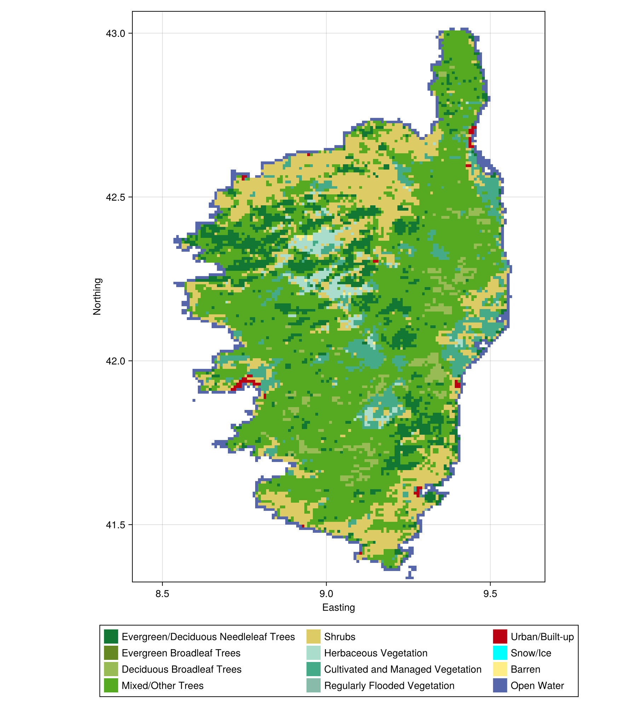

Creating a landcover consensus map
In this vignette, we will look at the different landcover classes in Corsica. This is an opportunity to see how we can edit, mask, and aggregate data for processing.
using SpeciesDistributionToolkit
using CairoMakiespatial_extent = (left = 8.412, bottom = 41.325, right = 9.662, top = 43.060)(left = 8.412, bottom = 41.325, right = 9.662, top = 43.06)Defining a bounding box is important because, although we can clip any layer, the package will only read what is required. For large data (like landcover data), this is a significant improvement in memory footprint.
We now define our data provider, composed of a data source (EarthEnv) and a dataset (LandCover).
dataprovider = RasterData(EarthEnv, LandCover)RasterData{EarthEnv, LandCover}(EarthEnv, LandCover)It is good practice to check which layers are provided:
landcover_types = layers(dataprovider)12-element Vector{String}:
"Evergreen/Deciduous Needleleaf Trees"
"Evergreen Broadleaf Trees"
"Deciduous Broadleaf Trees"
"Mixed/Other Trees"
"Shrubs"
"Herbaceous Vegetation"
"Cultivated and Managed Vegetation"
"Regularly Flooded Vegetation"
"Urban/Built-up"
"Snow/Ice"
"Barren"
"Open Water"For more information, you can also refer to the URL of the original dataset:
SimpleSDMDatasets.url(dataprovider)"https://www.earthenv.org/landcover"We can download all the layers using a list comprehension. Note that the name (stack) is a little misleading, as the packages have no concept of what a stack of raster is.
stack = [
SDMLayer(dataprovider; layer = layer, full = true, spatial_extent...) for
layer in landcover_types
]12-element Vector{SDMLayer{UInt8}}:
SDMLayer{UInt8}(UInt8[0x00 0x00 … 0x00 0x00; 0x00 0x00 … 0x00 0x00; … ; 0x00 0x00 … 0x00 0x00; 0x00 0x00 … 0x00 0x00], Bool[1 1 … 1 1; 1 1 … 1 1; … ; 1 1 … 1 1; 1 1 … 1 1], (8.408333333333328, 9.66666666666666), (41.325, 43.06666666666668), "+proj=longlat +datum=WGS84 +no_defs")
SDMLayer{UInt8}(UInt8[0x00 0x00 … 0x00 0x00; 0x00 0x00 … 0x00 0x00; … ; 0x00 0x00 … 0x00 0x00; 0x00 0x00 … 0x00 0x00], Bool[1 1 … 1 1; 1 1 … 1 1; … ; 1 1 … 1 1; 1 1 … 1 1], (8.408333333333328, 9.66666666666666), (41.325, 43.06666666666668), "+proj=longlat +datum=WGS84 +no_defs")
SDMLayer{UInt8}(UInt8[0x00 0x00 … 0x00 0x00; 0x00 0x00 … 0x00 0x00; … ; 0x00 0x00 … 0x00 0x00; 0x00 0x00 … 0x00 0x00], Bool[1 1 … 1 1; 1 1 … 1 1; … ; 1 1 … 1 1; 1 1 … 1 1], (8.408333333333328, 9.66666666666666), (41.325, 43.06666666666668), "+proj=longlat +datum=WGS84 +no_defs")
SDMLayer{UInt8}(UInt8[0x00 0x00 … 0x00 0x00; 0x00 0x00 … 0x00 0x00; … ; 0x00 0x00 … 0x00 0x00; 0x00 0x00 … 0x00 0x00], Bool[1 1 … 1 1; 1 1 … 1 1; … ; 1 1 … 1 1; 1 1 … 1 1], (8.408333333333328, 9.66666666666666), (41.325, 43.06666666666668), "+proj=longlat +datum=WGS84 +no_defs")
SDMLayer{UInt8}(UInt8[0x00 0x00 … 0x00 0x00; 0x00 0x00 … 0x00 0x00; … ; 0x00 0x00 … 0x00 0x00; 0x00 0x00 … 0x00 0x00], Bool[1 1 … 1 1; 1 1 … 1 1; … ; 1 1 … 1 1; 1 1 … 1 1], (8.408333333333328, 9.66666666666666), (41.325, 43.06666666666668), "+proj=longlat +datum=WGS84 +no_defs")
SDMLayer{UInt8}(UInt8[0x00 0x00 … 0x00 0x00; 0x00 0x00 … 0x00 0x00; … ; 0x00 0x00 … 0x00 0x00; 0x00 0x00 … 0x00 0x00], Bool[1 1 … 1 1; 1 1 … 1 1; … ; 1 1 … 1 1; 1 1 … 1 1], (8.408333333333328, 9.66666666666666), (41.325, 43.06666666666668), "+proj=longlat +datum=WGS84 +no_defs")
SDMLayer{UInt8}(UInt8[0x00 0x00 … 0x00 0x00; 0x00 0x00 … 0x00 0x00; … ; 0x00 0x00 … 0x00 0x00; 0x00 0x00 … 0x00 0x00], Bool[1 1 … 1 1; 1 1 … 1 1; … ; 1 1 … 1 1; 1 1 … 1 1], (8.408333333333328, 9.66666666666666), (41.325, 43.06666666666668), "+proj=longlat +datum=WGS84 +no_defs")
SDMLayer{UInt8}(UInt8[0x00 0x00 … 0x00 0x00; 0x00 0x00 … 0x00 0x00; … ; 0x00 0x00 … 0x00 0x00; 0x00 0x00 … 0x00 0x00], Bool[1 1 … 1 1; 1 1 … 1 1; … ; 1 1 … 1 1; 1 1 … 1 1], (8.408333333333328, 9.66666666666666), (41.325, 43.06666666666668), "+proj=longlat +datum=WGS84 +no_defs")
SDMLayer{UInt8}(UInt8[0x00 0x00 … 0x00 0x00; 0x00 0x00 … 0x00 0x00; … ; 0x00 0x00 … 0x00 0x00; 0x00 0x00 … 0x00 0x00], Bool[1 1 … 1 1; 1 1 … 1 1; … ; 1 1 … 1 1; 1 1 … 1 1], (8.408333333333328, 9.66666666666666), (41.325, 43.06666666666668), "+proj=longlat +datum=WGS84 +no_defs")
SDMLayer{UInt8}(UInt8[0x00 0x00 … 0x00 0x00; 0x00 0x00 … 0x00 0x00; … ; 0x00 0x00 … 0x00 0x00; 0x00 0x00 … 0x00 0x00], Bool[1 1 … 1 1; 1 1 … 1 1; … ; 1 1 … 1 1; 1 1 … 1 1], (8.408333333333328, 9.66666666666666), (41.325, 43.06666666666668), "+proj=longlat +datum=WGS84 +no_defs")
SDMLayer{UInt8}(UInt8[0x00 0x00 … 0x00 0x00; 0x00 0x00 … 0x00 0x00; … ; 0x00 0x00 … 0x00 0x00; 0x00 0x00 … 0x00 0x00], Bool[1 1 … 1 1; 1 1 … 1 1; … ; 1 1 … 1 1; 1 1 … 1 1], (8.408333333333328, 9.66666666666666), (41.325, 43.06666666666668), "+proj=longlat +datum=WGS84 +no_defs")
SDMLayer{UInt8}(UInt8[0x64 0x64 … 0x64 0x64; 0x64 0x64 … 0x64 0x64; … ; 0x64 0x64 … 0x64 0x64; 0x64 0x64 … 0x64 0x64], Bool[1 1 … 1 1; 1 1 … 1 1; … ; 1 1 … 1 1; 1 1 … 1 1], (8.408333333333328, 9.66666666666666), (41.325, 43.06666666666668), "+proj=longlat +datum=WGS84 +no_defs")We know that the last layer ("Open Water") is a little less interesting, so we can create a mask for the pixels that are less than 100% open water.
open_water_idx = findfirst(isequal("Open Water"), landcover_types)
open_water_mask = nodata(stack[open_water_idx], 100.0f0)SDM Layer with 14262 UInt8 cells
Proj string: +proj=longlat +datum=WGS84 +no_defs
Grid size: (209, 151)We can now mask all of the rasters in the stack, to remove the open water pixels:
for i in eachindex(stack)
mask!(stack[i], open_water_mask)
endAt this point, we are ready to get the most important land use category for each pixel, using the mosaic function:
consensus = mosaic(argmax, stack)SDM Layer with 14262 Int64 cells
Proj string: +proj=longlat +datum=WGS84 +no_defs
Grid size: (209, 151)In order to represent the output, we will define a color palette corresponding to the different categories in our data:
landcover_colors = [
colorant"#117733",
colorant"#668822",
colorant"#99BB55",
colorant"#55aa22",
colorant"#ddcc66",
colorant"#aaddcc",
colorant"#44aa88",
colorant"#88bbaa",
colorant"#bb0011",
:aqua,
colorant"#FFEE88",
colorant"#5566AA",
];12-element Vector{Any}:
RGB{N0f8}(0.067,0.467,0.2)
RGB{N0f8}(0.4,0.533,0.133)
RGB{N0f8}(0.6,0.733,0.333)
RGB{N0f8}(0.333,0.667,0.133)
RGB{N0f8}(0.867,0.8,0.4)
RGB{N0f8}(0.667,0.867,0.8)
RGB{N0f8}(0.267,0.667,0.533)
RGB{N0f8}(0.533,0.733,0.667)
RGB{N0f8}(0.733,0.0,0.067)
:aqua
RGB{N0f8}(1.0,0.933,0.533)
RGB{N0f8}(0.333,0.4,0.667)We can now create our plot:
fig = Figure(; size = (900, 1000))
panel = Axis(
fig[1, 1];
xlabel = "Easting",
ylabel = "Northing",
aspect = DataAspect()
)
heatmap!(
panel,
consensus;
colormap = landcover_colors,
)
Legend(
fig[2, 1],
[PolyElement(; color = landcover_colors[i]) for i in eachindex(landcover_colors)],
landcover_types;
orientation = :horizontal,
nbanks = 4,
)